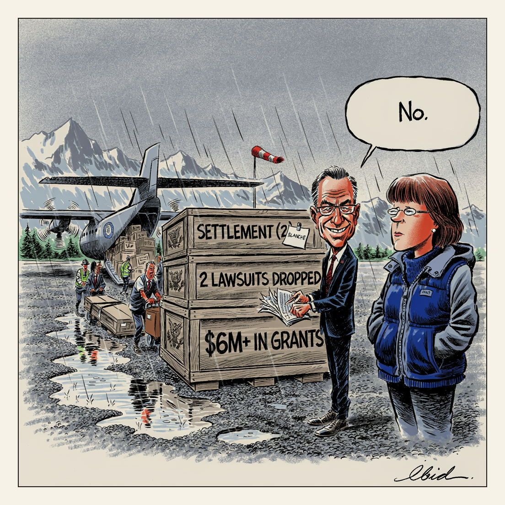

The lawsuits stay dropped.
Freight

The Senate confirmed Todd Blanche, 52, as attorney general 50-49 in an overnight Saturday vote. Republicans Susan Collins and Lisa Murkowski joined Democrats in opposition; to court Murkowski the administration sent Blanche to Alaska for two days, reached two settlements, dropped two lawsuits and awarded more than $6 million in grants. Blanche previously served as Trump's personal criminal defense lawyer at the New York hush-money trial.